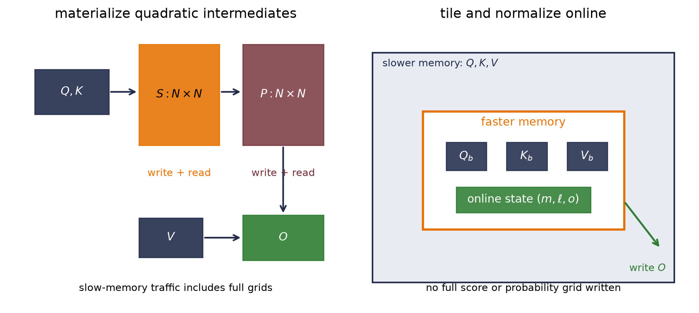

Appendix C — Numerical Precision and Hardware Efficiency
Suppose a training step computes a gradient of \(10^{-8}\). The gradient is nonzero—the learning rate is nonzero, and their product is nonzero. Yet a stored weight can remain exactly unchanged. Now suppose an attention implementation performs the same mathematical operation as another one—with essentially the same arithmetic count—but finishes much sooner because it moves fewer bytes. Neither story is visible from the algebra alone—it omits both rounding and movement.
That is why numerical precision and hardware efficiency belong together. A dtype says which values a tensor can store—it does not, by itself, say how every operation is evaluated. A FLOP count says how much arithmetic an algorithm requests—it does not say how often data crosses a slow memory boundary. We need contracts for both.
Appendix B established that shape, dtype, device, and layout are separate parts of a tensor’s representation (Appendix B). Here we open the dtype field—and follow its consequences through rounding, stable computation, mixed precision, the Roofline model, and one especially useful case study: FlashAttention.
C.1 One operation, several precision contracts
The phrase “this model uses FP16” is too compressed to audit. For one operation, ask four questions instead.
Contract
What to record
Why it can differ
Operand storage
dtype used to store the inputs
Parameters and activations may occupy fewer bytes
Evaluation or product
precision used for products or nonlinear functions
A kernel may round inputs or choose an operation-specific dtype
Accumulation
dtype used for a running sum or reduction
Dot products may accumulate low-precision products into a wider dtype
Output storage
dtype used to store the result
A wider accumulator may be rounded back to a narrower tensor
A matrix multiply can therefore read two FP16 tensors—then form products from those inputs, accumulate the dot products in FP32, and store an FP16 output. An optimizer can update an FP32 parameter even when selected forward operations use BF16. These are not edge cases—they are the point of mixed precision.
This extends the distinction in Chapter 17: storage precision is not compute precision, and neither one identifies the trainable state. It also prevents a performance shortcut. A two-byte tensor is smaller than a four-byte tensor, but that alone does not prove a twofold speedup. The device needs an efficient kernel for the operation, and the operation needs to be limited by something those saved bytes actually relieve.
The sign bit \(s\) chooses the sign. The exponent field \(e\) buys range—access to very large and very small scales. The fraction field \(f\) buys resolution—more representable points within one scale. “Mantissa” is common informal vocabulary for the significand, but fraction bits is the more precise name for the stored trailing field. Normal values receive an implicit leading 1, so a format with 23 stored fraction bits has 24 bits of significand precision.
Format
Bytes
Exponent bits
Fraction bits
Spacing above 1
Smallest positive normal
Largest finite
FP64
8
11
52
\(2^{-52}\)
\(2^{-1022}\)
about \(1.80\times10^{308}\)
FP32
4
8
23
\(2^{-23}\)
\(2^{-126}\)
about \(3.40\times10^{38}\)
FP16
2
5
10
\(2^{-10}\)
\(2^{-14}\)
\(65{,}504\)
BF16
2
8
7
\(2^{-7}\)
\(2^{-126}\)
about \(3.39\times10^{38}\)
FP16 and BF16 spend the same 16 bits differently. FP16 gives three more fraction bits, so its grid is eight times finer near 1. BF16 keeps the eight-bit exponent field of FP32, so its range is in the same class as FP32, but its local grid is coarse. The right question is not “which 16-bit format is more precise?” It is “does this calculation need more range or more resolution, and where?”
torch.finfo lets us inspect the actual dtype contract. Its eps is the distance from 1 to the next larger representable value. It is not the smallest positive value; tiny is the smallest positive normal value.
Code: inspect range and spacing for four floating-point dtypes
import mathimport matplotlib.pyplot as pltfrom matplotlib.patches import FancyArrowPatch, Rectangleimport torchfrom torch import nntorch.manual_seed(6050)torch.set_default_dtype(torch.float64)torch.set_num_threads(1)dtype_names = { torch.float16: "FP16", torch.bfloat16: "BF16", torch.float32: "FP32", torch.float64: "FP64",}for dtype in (torch.float16, torch.bfloat16, torch.float32, torch.float64): info = torch.finfo(dtype)print(f"{dtype_names[dtype]:>4}: eps={info.eps:.8e}, "f"tiny={info.tiny:.8e}, max={info.max:.8e}" )for dtype in (torch.float16, torch.bfloat16, torch.float32): one = torch.tensor(1.0, dtype=dtype) next_one = torch.nextafter(one, torch.tensor(float("inf"), dtype=dtype))assert next_one - one == torch.finfo(dtype).epswide = torch.tensor(70_000.0)small = torch.tensor(2.0**-26)print("70,000 stored as FP16 / BF16:", wide.to(torch.float16).item(), wide.to(torch.bfloat16).item())print("2^-26 stored as FP16 / BF16:", small.to(torch.float16).item(), small.to(torch.bfloat16).item())
The printed spacings are \(9.765625\times10^{-4}\) for FP16, \(7.8125\times10^{-3}\) for BF16, and about \(1.19\times10^{-7}\) for FP32. The range-resolution trade is visible in the last two lines. FP16 sends 70,000 to infinity and \(2^{-26}\) to zero; BF16 stores them as 70,144 and \(1.4901161\times10^{-8}\). BF16 reached both scales, but 70,000 moved to the nearest point on its coarse grid.
The spacing is not constant across the number line. Within one exponent bin it is fixed; when the exponent grows by one, the spacing doubles. Near 1, subtracting \(10^{-8}\) from an FP32 value can therefore disappear—even though FP32 can represent \(10^{-8}\) perfectly well near zero. Representability depends on the value’s neighborhood, not just on the isolated update.
NoteNormals, subnormals, infinities, and NaNs
The all-zero exponent field represents zero and subnormal values, which fill part of the gap below the smallest normal number with reduced precision. The all-one exponent field represents infinities and NaNs in the IEEE formats used here. Hardware and kernel behavior around subnormals can vary—some accelerator paths flush them to zero—so tiny is a portable normal-range landmark, not a promise about the smallest value every execution path preserves.
Two other names appear frequently in deep learning—TF32 is a matrix-compute mode, not a tensor storage dtype: supported operations keep FP32 storage and range while using reduced input precision for multiplication and wider accumulation. FP8 is a family rather than one universal format; E4M3 and E5M2 allocate their few exponent and fraction bits differently and are normally used with scales and wider accumulators. Chapter 17 treats those choices as quantization policies rather than magical calls to tensor.to(...) (Chapter 17).
C.3 Rounding is part of the algorithm
Real-number algebra lets us reassociate sums, cancel equal terms, and treat every nonzero magnitude as distinct. Floating-point arithmetic does not. After an operation, the result is rounded to an available grid point—overflow, underflow, and ordering can therefore change the computation.
The familiar 0.1 + 0.2 example is the smallest witness. One tenth and one fifth have nonterminating binary expansions, so their stored approximations add to the FP64 value printed as 0.30000000000000004, not the stored approximation printed as 0.3. The real-number identity is intact—the finite encodings and rounding steps are different.
A nonzero update can become no update
Let a stored weight be \(w=1\). If the exact update \(\Delta w\) is less than roughly half the local spacing, rounding to nearest can return the original bit pattern:
\[
\operatorname{fl}(w-\Delta w)=w.
\]
That is different from an update underflowing to zero by itself. The update can be representable near zero and still be too small to change a much larger stored value. The depth experiment in Chapter 5 and the norm diagnostic in Chapter 9 encountered these two failure modes from different directions.
Code: separate rounded-away updates, accumulation loss, and cancellation
All three stored weights remain 1. The deliberately serial FP16 accumulator stops at 256, while the FP32 accumulator reaches the exact sum 1,250. This loop isolates the accumulator’s role—production reductions may use trees, fused instructions, or wider accumulators and need not reproduce 256. Finally, \((10^8-10^8)+1\) returns 1 in FP32, but \((10^8+1)-10^8\) returns 0 because the 1 was rounded away before subtraction. Algebraically equal expressions acquired different histories.
Stable algebra prevents avoidable overflow
For logits \(\vect{z}\), direct softmax forms exponentials that may overflow:
\[
p_i=\frac{e^{z_i}}{\sum_j e^{z_j}}.
\]
Subtracting \(m=\max_j z_j\) leaves the ratio unchanged and ensures that the largest exponent is 1:
The naïve calculation is nonfinite in all three dtypes. Stable softmax prints [0.0900, 0.2448, 0.6650] in FP16 and [0.0900, 0.2447, 0.6652] in FP32—the latter is the expected vector to four decimals. BF16 returns an approximately uniform vector—not because stable softmax failed, but because 1000, 1001, and 1002 were all stored as 1000 before softmax began. Stable algebra can avoid unnecessary overflow; it cannot reconstruct distinctions that the input representation erased.
The same principle appears across the book:
Kernel regression in Chapter 12 subtracts a maximum before exponentiating so a tiny bandwidth does not turn every weight into zero and produce 0/0.
Chapter 10’s default forget-gate factor compounds to \(0.5^{80}=8.27\times10^{-25}\) (Chapter 10). That value is still nonzero in FP32—the architectural signal can be unusably attenuated before representation turns it into zero.
Long products such as the diffusion schedule in Chapter 19 are often more legible as sums of logarithms. A coefficient can be tiny without being zero; inspect the chosen dtype before replacing mathematics with a special case.
Linear systems should be solved directly rather than by explicitly forming an inverse (Appendix A). Higher precision can reduce rounding error, but it does not cure an ill-conditioned question.
Warning“Use more precision” is not a stability proof
A wider dtype postpones some failures. It does not repair a poor formulation, make subtraction well conditioned, or guarantee finite intermediate values. First choose a stable algorithm—log-sum-exp, a direct solve, a protected denominator—then choose a precision contract that preserves the scales the algorithm must carry.
C.4 Mixed precision is a policy
Mixed precision assigns different numerical jobs to different dtypes. The original FP16 training recipe used low-precision working tensors, FP32 accumulation where needed, FP32 master weights for small optimizer updates, and loss scaling for tiny gradients. Current frameworks choose operation-specific policies—but the reason for the pieces remains useful.
BF16 changes the balance. Its FP32-like exponent range makes gradient underflow much less common than in FP16, so BF16 training often does not need loss scaling. Its seven fraction bits still give coarse local spacing—wide range does not protect a small update applied to a much larger BF16 value.
For a positive scale \(S\) and loss \(L\),
\[
\nabla_{\theta}(SL)=S\nabla_{\theta}L.
\]
Backward propagation on \(SL\) moves small gradients into FP16’s representable range. Before the optimizer update, division by \(S\) restores their intended scale. Dynamic loss scaling lowers \(S\) after detected overflow and may grow it after successful steps. It cannot restore a forward activation that already overflowed or an optimizer update that was rounded away in narrow master state.
The next check uses no accelerator timing—it isolates the arithmetic, then asks CPU autocast which dtypes it chose for one linear layer in this environment.
Code: expose loss scaling and operation-specific CPU autocast dtypes
Direct FP16 storage turns \(2^{-26}\) into zero; scaling by \(2^{12}\), rounding to FP16, and unscaling recovers \(2^{-26}\) in this controlled case. In the autocast check, the input and parameter remain FP32, the linear output is BF16, and the parameter gradient is FP32. That observed policy is evidence about this operation and build—not a promise that every operation, device, or future release makes the same choice.
TipAudit mixed precision by role
Record parameter dtype, activation dtype at important boundaries, reduction or accumulator dtype when the API exposes it, gradient dtype, optimizer-state dtype, and the loss-scaling policy. Do not use “FP16 training” as a substitute for that list. Also distinguish arithmetic accumulation inside a dot product from gradient accumulation across microbatches; they share a word, not a mechanism.
C.5 Work is not time: the Roofline model
Why can two mathematically equivalent programs have different speed? Imagine a chef whose arithmetic station is extremely fast but whose ingredients arrive through one narrow door. More cooks at the station do not help when every recipe waits at the door. Other recipes reuse each delivered ingredient many times and keep the station busy. Hardware has the same tension between computation and data movement.
Choose a memory boundary—often device memory to on-chip cache or SRAM—and count:
This ratio is operational intensity. “Arithmetic intensity” is often used informally for the same idea, though the original Roofline terminology emphasizes measured traffic at a stated boundary. Let \(P_{\max}\) be peak compute throughput and let \(\beta\) be sustainable bandwidth across that boundary. The basic Roofline bound is
The sloped roof \(\beta I\) is the bandwidth limit; the flat roof \(P_{\max}\) is the compute limit. They meet at the ridge point
\[
I_* = \frac{P_{\max}}{\beta}.
\tag{C.5}\]
A kernel left of \(I_*\) is bandwidth-bound relative to these two roofs—a kernel right of it is compute-bound relative to them. “Relative to” matters: another ceiling—an unsupported shape, launch overhead, synchronization, instruction mix, or a different memory level—may sit lower.
The following figure uses an invented machine with a 100-TFLOP/s compute roof and a 2-TB/s bandwidth roof. It is a worked coordinate system, not a benchmark of this computer or a claim about any product.
Figure code: build and interrogate a synthetic Roofline
Figure C.1: A synthetic Roofline with a 100-TFLOP/s compute roof and a 2-TB/s bandwidth roof. Their intersection is 50 FLOP/byte. The three labeled points illustrate a low-intensity elementwise-style kernel, a kernel still limited by the bandwidth roof, and a kernel at the compute roof; they are teaching coordinates, not measurements.
Matrix multiplication earns reuse
Consider \(\matr{C}=\matr{A}\matr{B}\) with shapes \(m\times k\), \(k\times n\), and \(m\times n\). Count a multiply-add as two FLOPs. An optimistic compulsory-traffic estimate—read each input once and write the output once—gives
where \(s\) is bytes per stored element. For square \(n\times n\) matrices this reduces to \(2n/(3s)\). At \(n=128\), the estimate is 21.3 FLOP/byte for FP32 and 42.7 for a two-byte format. On the synthetic machine in Figure C.1, both remain left of the 50-FLOP/byte ridge. At \(n=2048\), the ideal estimates rise to 341.3 and 682.7; reuse is now high enough to reach the flat roof if the implementation realizes the ideal traffic.
This is why matrix multiplication is such a valuable computational primitive. Larger dense products can reuse values many times after paying to move them. A simple elementwise transform with about two operations, one FP32 read, and one FP32 write has an intensity near \(2/8=0.25\) FLOP/byte—little arithmetic is available to hide the doorway cost.
Lower precision can change both axes of this analysis. Fewer bytes can raise operational intensity, while specialized low-precision instructions can raise the compute roof. The ridge moves when either roof moves. Scales, casts, wider outputs, optimizer state, alignment, and unsupported shapes also consume resources. “Half the bytes” is therefore an input to a model, not a timing conclusion.
WarningA Roofline is a bound, not a stopwatch
State the memory boundary, dtype, operation family, shapes, and roofs. Prefer measured traffic and sustainable bandwidth when diagnosing a real run. A point below the roof does not prove why it is below; it tells you which ceilings are still possible and where to investigate next.
NoteSystems bridge (non-examinable): cache the past at generation time
Chapter 14’s sampler confesses that it recomputes the whole visible prefix for every new character (Chapter 14). For an evaluation-mode causal Transformer decoding a growing prefix with stable position indices and no eviction, appending a token cannot change earlier positions: their masks forbid the suffix, and their keys and values are therefore reusable. A key/value (KV) cache stores those projected rows at every layer. At the next step, the layer computes the new token’s query, key, and value, appends the new key and value, and forms only the new query’s attention row against the stored prefix.
Let \(L\) be the layer count, \(B\) the batch size, \(h_{KV}\) the number of key/value heads, \(t\) the cached length, \(d_h\) the head width, and \(s\) the bytes per stored element. The cache ledger is
Thus caching spends storage that grows linearly with context length. For one new token, dense attention reads a growing \(1\times t\) score row at each head; summed over generation, attention arithmetic is still quadratic in the final length. What the cache avoids is re-projecting old states and rebuilding their old-to-old score grids. That is an arithmetic-and-storage statement, not a latency measurement.
That reuse rule does not apply unchanged to Chapter 14’s exact toy loop. The loop evicts old characters from a sliding window and reindexes the retained positions, so the retained states no longer have the same past or positional inputs. A cached version needs a cache-compatible eviction and position policy; otherwise it must recompute the window.
This is a different bargain from FlashAttention below. KV caching keeps linear-size past state to reuse it during autoregressive inference. FlashAttention avoids writing full quadratic score and probability grids, and may recompute blocks during training’s backward pass. Put both in the I/O ledger before timing either one; Chapter 17 adds the cache to the total-memory bill (Chapter 17).
where \(N\) is sequence length, \(d\) is head width, and \(\matr{M}\) carries any mask. The two matrix products require roughly \(4N^2d\) FLOPs under the same two-FLOPs-per- multiply-add convention, plus \(O(N^2)\) work for masking and softmax.
A straightforward sequence of kernels materializes a score matrix \(\matr{S}=\matr{Q}\matr{K}^{\top}/\sqrt d\), writes it to device memory, reads and normalizes it into a probability matrix \(\matr{P}\), writes \(\matr{P}\), then reads it again for \(\matr{P}\matr{V}\). The \(N\times N\) intermediates are the expensive part of the ledger.
For one head with \(d=64\) and a two-byte dtype, the tensor-shape counts below exclude any materialized mask. An implicit causal rule and a stored dense bias have different ledgers.
Sequence length \(N\)
Scores + probabilities
\(Q,K,V,O\) combined
512
1 MiB
0.25 MiB
2,048
16 MiB
1 MiB
4,096
64 MiB
2 MiB
At \(N=2048\), one \(N\times N\) matrix is 8 MiB per head. Separate score and probability arrays are 16 MiB per head, or 512 MiB across 32 heads. These are logical tensor sizes—not allocator measurements, backward-pass totals, or exact traffic—and they make the scaling contrast visible: the state vectors grow linearly in \(N\), while the materialized attention grid grows quadratically.
The quick recap: tile, normalize online, and fuse
FlashAttention computes exact dense attention without materializing the full quadratic intermediates in high-bandwidth memory. Exact here means that it does not replace attention with a sparse, low-rank, or kernel approximation. Floating-point operation order changes, so bitwise equality is not promised.
The algorithm tiles \(Q\), \(K\), and \(V\) to fit blocks in faster on-chip memory. For one query row, it can process score blocks while maintaining three pieces of state: a running maximum \(m\), a running exponential sum \(\ell\), and an unnormalized output vector \(\vect{o}\). Given a new score block \(\vect{s}_b\) and matching value block \(\matr{V}_b\),
Initialize \(m=-\infty\), \(\ell=0\), and \(\vect{o}=\vect{0}\); after all blocks, return \(\vect{o}/\ell\). When a later block introduces a larger maximum, the factor \(e^{m-m'}\) rescales the old state into the new coordinate system. It is the stable softmax trick carried across tiles. The scores \(\vect{s}_b\) include any mask; a fully masked tile must be skipped or handled specially before taking its maximum. The recurrence also assumes every query has at least one visible key—an all-masked row needs an explicit policy rather than arithmetic on an all-\(-\infty\) score row.
The next cell is deliberately a one-row-at-a-time teaching implementation—not a FlashAttention kernel. It verifies the online identity on CPU; the following figure then diagrams the I/O change independently.
Code: verify materialized attention against online blockwise attention
dense/online maximum gap: 4.441e-16
full score grid: 49 entries; one-row block: at most 3

Figure C.2: Materialized attention and tiled online attention evaluate the same dense rule but schedule its intermediates differently. The left path combines the probability grid with V after writing and rereading full score and probability grids. The right path keeps Q, K, and V tiles plus the online-softmax state close to the arithmetic, then writes the linear-size output. The diagram is conceptual; it does not claim measured traffic for a particular kernel.
The maximum difference is \(4.441\times10^{-16}\) in FP64. That is agreement to the expected scale, not bitwise identity. A full \(7\times7\) score grid contains 49 entries; the pedagogical loop holds at most three scores for one query at a time. Real FlashAttention tiles multiple query rows and is engineered around a target memory hierarchy, parallel work partition, masks, and backward propagation.
The Roofline connection is now concrete. FlashAttention does not make dense attention linear-time: its dominant arithmetic remains \(O(N^2d)\). It changes the schedule. Tiling, fusion, online softmax, and backward recomputation reduce reads and writes of quadratic intermediates across the expensive memory boundary. Some extra arithmetic can be a good trade when it avoids much more costly movement.
FlashAttention-2 keeps that I/O-aware idea and improves work partitioning, sequence- dimension parallelism, and the balance between matrix and non-matrix operations. Its paper’s device-specific speedups are measurements under stated conditions—not portable constants. Likewise, PyTorch’s scaled_dot_product_attention may select a FlashAttention backend, another fused backend, or a mathematical fallback depending on device, dtype, dimensions, masks, and software build. Calling the function alone does not prove which kernel ran.
NoteWhat FlashAttention does not change
The attention rule, causal or padding mask semantics, and dense quadratic arithmetic remain. “Exact” means no modeling approximation; floating-point order still changes. Longer context is not free, and an implementation that is faster for one shape or device may not be faster for another.
C.7 A measurement contract
Precision and Roofline analysis help us ask sharper questions, but each performance claim still needs evidence matched to the quantity.
Claim
Evidence to collect
“The checkpoint is smaller”
Serialized bytes under a named format
“The live tensors use less memory”
Peak allocated/resident memory under a named workload
“The operation does less arithmetic”
An explicit operation-count convention or profiler
“The kernel moves fewer bytes”
A boundary-specific I/O model or hardware counters
“The kernel is faster”
Synchronized, warmed, repeated timings on named hardware and software
“The system has higher throughput”
End-to-end examples or tokens per second at a stated batch and sequence shape
Record dtype, tensor shapes, backend and kernel selection, hardware, warmup, synchronization, compile state, and summary statistic. Separate latency from throughput and kernel time from end-to-end time. A smaller checkpoint is not automatically faster, just as the dot-product proxy in Chapter 16 was not a wall-clock measurement.
The studies in this appendix intentionally establish representation limits, analytical bounds, and CPU equality checks. They do not establish a hardware speedup. That honesty line is part of the result—not a footnote to add after an attractive number appears.
Okay, so—we can now read a performance story in two passes. First audit the numerical contract: what is stored, how products and reductions are evaluated, and where rounding can erase signal. Then audit the movement contract: how many useful operations are performed, how many bytes cross which boundary, and which roof can limit the result. FlashAttention is memorable because it joins the two passes. Its online softmax preserves a stable exact rule while its tiled schedule refuses to pay for full quadratic intermediates in slow memory.
Sources and further reading
Instructor course seed 9.2-Faster-Transformers.tex supplied the KV-cache generation contract; the bridge above re-derives its storage ledger and does not reproduce the seed’s implementation or external figure.
(Pencil + code.) For FP16, BF16, and FP32, use torch.nextafter to measure the gap above \(2^{-10}\), 1, and \(2^{10}\). Predict how the gap changes with the exponent, verify it, and identify one update that is representable near zero but rounds away when subtracted from each base value.
(Code and interpretation.) Compare direct softmax and max-shifted softmax for [10, 11, 12], [1000, 1001, 1002], and [10000, 10001, 10002] in FP16, BF16, FP32, and FP64. Record the stored logits before interpreting the probabilities. Separate overflow prevented by stable algebra from distinctions erased by rounding.
(Pencil + code.) Reproduce the serial-sum experiment for the terms 0.125 and 0.1 with FP16 and FP32 accumulators. Then implement the \(2^{-26}\) loss-scaling probe with several powers-of-two scales. Explain why loss scaling can preserve a tiny gradient but cannot make a rounded-away FP16 master-weight update effective.
(Roofline analysis.) Consider a hypothetical machine with a 60-TFLOP/s FP32 roof, a 120-TFLOP/s 16-bit matrix roof, and 1.5-TB/s memory bandwidth. Draw both Rooflines and compute both ridge points. Place an FP32 elementwise transform at 0.25 FLOP/byte, then place both the FP32 and two-byte ideal square GEMMs from Equation C.6 at \(n=256\). State every traffic assumption, then explain why the bounds do not predict a runtime.
(Code.) Extend the online-attention check to batches, multiple query rows per tile, and a causal mask. Compare it with materialized attention in FP64 and FP32; report maximum absolute error rather than demanding bitwise equality. For \(N\in\{512,2048,4096\}\) and \(d=64\), compute the logical bytes of \(Q,K,V,O\) and two \(N\times N\) intermediates for FP32 and a two-byte dtype. Explain which counts are tensor sizes and which would require a profiler to turn into measured traffic.